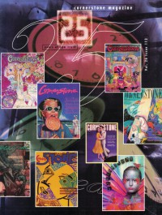

CMnexus
:
Contemporary Christian culture, music, and media.
Magazines
Profiles
Dove Awards
cmnexus.org
CM
nexus
→
Magazine list
→
Cornerstone
→
Issues
Cornerstone
, 1997, vol. 26, iss. 113
< -- Prev
Issue list
Next -- >
Cover

Writers in this Issue
Brown, Todd
Canfield, David
Ebel, Jeff
Hill, Don
Perlmutter, Tammy
Article:
"Cornerstone Interviews: 25 Years"
Quotes from Cornerstone interviews
News Item:
"Christian Musician Rich Mullins Killed In Car Accident"
Rich Mullins
Album Review:
Seeds
-
Seeds
by Jeff Ebel
SHeeSH
-
SHeeSH
by Todd Brown
Jason & the G-Men
-
"G" As In Men
by David Canfield
Robert Robertson & Henry Wiens
-
From the Heart Volume 2
by David Canfield
Iona
-
Heaven's Bright Sun
by David Canfield
Brandtson
-
Letterbox
by Don Hill
Julie Miller
-
Blue Pony
by Tammy Perlmutter
Amy Grant
-
Behind The Eyes
by Tammy Perlmutter
Say-So
-
Say-So
by David Canfield
Left Out
-
Serve Self
by Todd Brown
Over the Rhine
-
Besides
by David Canfield
Miss Angie
-
100 Million Eyeballs
by David Canfield
Headnoise
-
demo
by Tammy Perlmutter
Nina Llopis
-
I'm Your Child
by Tammy Perlmutter
Beki Hemingway
-
Rinse. Repeat.
by Tammy Perlmutter
Relevant Links
Official web site of Cornerstone
You may be able to find
Cornerstone
in a library near you:
check
Worldcat
< -- Prev
Issue list
Next -- >
CMnexus
(noun)
The magazine index
of modern music
and Christianity
© 2011 CMnexus. Last updated April 2021.
Contact:
Rants and other correspondence to:
editor -AT- cmnexus
-DØT- org
About